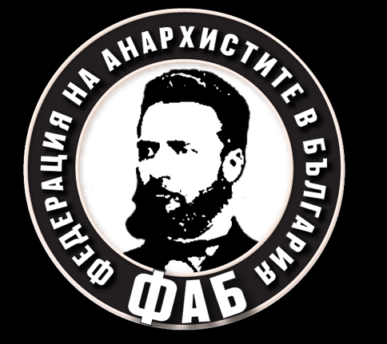

[Dieses Gespräch mit Nikolaj „Scharkhan“ Tellalow (Jahrgang 1967, Übersetzer, Schriftsteller, Mitglied des Redaktionskomitees der Zeitung „Swobodna Misl“) wurde in russischer Sprache per e-mail geführt und danach ins Deutsche übersetzt. ]

- Lass uns langsam anfangen. Erzähl mal über die kulturellen, geistigen Wurzeln des Anarchismus in Bulgarien. Kann mensch von einem „bulgarischen“ Anarchismus sprechen?
Als eigentlichen Ursprung des Anarchismus in der Region könnte mensch die föderalistische Stammesstruktur bezeichnen – zuerst der slawischen Stämme, dann die der vom Pamir hergezogenen Altbulgaren. Des weiteren – in den bogomilischen Ketzereien.
Aber als eine konsequente Weltanschauung ist der Anarchismus erst nach dem Fall der drei bulgarischen Reiche unter die osmanische Herrschaft herangereift. Die Staatlichkeit der Eroberer hat niemand außer den Adeligen und später den einigen Reichen als „unsere eigene“ angesehen. Sogar die Kirche, die unter den Einfluss der griechischen Geistlichkeit geraten ist, bildete keine Alternative zur Herrschaft. Die Menschen waren genötigt auf die Methode der Selbstorganisation zurückzugreifen, um zu überleben. Und um eigene Belange nicht in Gefahr zu bringen, zog mensch es vor, sich nicht an die offiziellen Gerichte und andere Herrschaftsinstitutionen zu wenden, sondern Streitigkeiten im „mir“ (in der Gemeinde) zu schlichten, denn nur so lernte mensch, die verpflichtenden Regeln und Vereinbarungen einzuhalten.
Zudem hörte dieser Widerstand fünf Jahrhunderte lang nicht auf und verlief wellenförmig, mit Tiefen und Höhen. Noch im ersten Jhd. gab es keine Anführer aus den aufständischen Adeligen mehr. Versuche der Reste der Kriegerkaste, den katholischen Glauben anzunehmen, um Kreuzzüge aus dem Westen zu provozieren, die von Aufständen begleitet hätten begleitet werden sollen, schlugen auch fehl. (Es gab nur einen einzigen Kreuzzug, den von Wladislaw Jagelo, eher seine eigene emotionelle Entscheidung, als eine durchgeplante Handlung.)
Dem Volk wurde klar, dass politische Spiele sinnlos sind. Neue Kampfformen entwickelten sich. Hajdukenbanden (Banden von „Volksrächern“) arteten zwar öfters in gewöhnliche Räuberbanden, schufen aber eine interessante Tradition – die Wählbarkeit der Anführer und der Fahnenträger (der stellvertretenden Anführer faktisch), die fast mönchenhafte Enthaltsamkeitsgelübden für die Zeit der Aktivität (die Banden gingen im Winter auseinander und schlossen sich wieder im Frühling zusammen) und die soziale Komponente im Kampf – allmählich wurden nicht nur Türken oder Muslime zu Feinden, sondern hauptsächlich die Reichen und die Amtsträger ohne Unterschied in der ethnischen Herkunft oder des Glaubens. Manche Hajdukenbanden waren ethnisch gemischt, z.B. die Bauernarmee unter der Führung von Mehmet Sinap im 16. Jhd. oder der Aufstand vom ehemaligen Janitscharen Indzhe dem Heeresführer (ungefähr zur selben Zeit).
In der Epoche der Wiederauflebens Bulgariens (seit der ersten Hälfte des 19. Jhd.) waren Volksschulen, die autonom (ohne jegliche Verwaltungszentren) von Eltern- und Lehrerkomitees geführt wurden markantes Beispiel für Parallelstrukturen im Volk. Bei den Schulen wurden an den Erwachsenen orientierte Volksbibliotheken gegründet, die in sich Bibliotheken, Theater, Schulungen und eigenartige Diskussionsclubs vereinigten. Naturgemäß sind sie zu Kernen der revolutionären Komitees geworden.
Die nationale Befreiungsbewegung in Bulgarien hatte sehr stark ausgeprägte anarchistische Aspekte – ihre Initiatoren (nach Georgi Sawa Rakowskij) wendeten sich direkt an Bakunin zwecks Programm und Statut. Karawelow, Lewski und besonders Botew sahen die Zukunft in einer föderativen Republik, wo allen Ethnien und allgemein allen BürgerInnen lokale Selbstverwaltung, soziale Gleichheit und alle Menschenrechte garantiert wären. Als Beispiel sahen sie die Schweiz an, aber wohl nicht die reale, sondern eine idealisierte. Die Wucherei und das Bankiertum galten ihnen als „nicht ehrliche Arbeit“.
Leider konnte die Befreiung nicht durch eigene Kräfte erreicht werden, die Unabhängigkeit wurde zusammen mit der konstitutionellen Monarchie (etwas progressiver als der Absolutismus, aber ein gigantischer Schritt zurück hinter die Ideale der „heiligen und reinen Republik“) auf fremden Bajonetten ins Land gebracht.
Darin liegt die „Einzigartigkeit“ des Anarchismus auf dem bulgarischen Boden – im Kollektivismus, in der Genossenschaft der kleinen (Agrar-)Produzenten. Schwach ausgeprägt war die Tradition des Anarcho-Syndikalismus, weil es ganz wenig Industriearbeiter gab, die zudem in den Fabriken arbeitend immer noch Bauern blieben.
Interessant ist, dass die noch unter den Sultans existierenden Gilden und Genossenschaften sich in Kooperativen verwandelten und „Kommunen“ genannt wurden, besonders wenn es sich um Verbrauchergenossenschaften handelte.
Der Kooperativen-Sektor spielte eine wichtige Rolle in der Wirtschaft des dritten Zarentums (ab 1908) und auch später, im „sozialistischen“ Bulgarien, einigen Autoren zufolge nahm er über 40% der Wirtschaft ein. Zwar zwang das bolschewistische Regime die Kooperativbewegung in den Kolchosenrahmen, aber nicht so brutal wie in der UdSSR.
Es ist noch früh über die Eigenschaften der modernden anarchistischen Bewegung in Bulgarien zu sprechen, auf jeden Fall hat die FAB das noch nicht analysiert.
Ich persönlich kann sagen, dass unser Anarchismus traditionell kommunistisch, atheistisch ist, den Begriff „Anarcho-Kapitalismus“ nehmen die GenossInnen einfach nicht ernst und die letzte „Mode“ (wie der National-Anarchismus) sorgt bestenfalls fürs Staunen.
- Wann entsteht eine explizit anarchistische Bewegung in Bulgarien „offiziell“, so zu sagen? Gab es Versuche der anarcho-syndikalistischen Organisierung?
Die erste anarchistische (bakunistische) Gruppe wurde von Christo Botew in Brail 1875 gegründet. Dann (um 1886 oder ein-zwei Jahre später) gründet Spiridon Glupatschew in Ruße eine kooperative Druckerei, ihre Redaktion kümmert sich um die schriftliche Propaganda der Herrschaftslosigkeit. Fast sofort setz auch die Repression der Herrschenden ein.
Wrban Kilifarski und Lehrer Nikola Stojnow gründen zur selben Zeit (1880–90er) Agrargsynikate, aber später entwickelt sich aus einem Teil der Syndikate in die Bulgarische Agrarische Volksunion (BAVU). Die Anarchisten verlassen sie.
Sehr präsent waren auch anarchistische Zirkeln in der revolutionären Befreiung von Mazedonien (1890–1907). In den Aufständen wurde dort 1903 die Kommune von Strandzhar gegründet – der ein Monat lang dauernder Versuch der freiheitlichen kommunistischen Gesellschaft. 1907 distanzieren sich AnarchistInnen von der nationalen Befreiungsbewegung in Mazedonien, denn diese befand sich bereits unter der Kontrolle von Politikern und mafiösen Organisationen.
Stojnow, Kilifarski und andere beginnen mit der bereits klassisch gewordenen anarchistischen Zeitung „Die Freie Gesellschaft“.
Die Frage der Vereinigung von Zirkeln und Gruppen in einer Föderation wurde von Gerdzhikow 1910 gestellt. Die geistigen Voraussetzungen sind da, aber Repression, Verhaftungen von AktivistInnen bremsen den Prozess aus. Schließlich störten auch die Kriege auf dem Balkan (viele wurden mobilisiert, manche meldeten sich freiwillig, andere landeten als Kriegsdienstverweigerer im Knast) und der 1. Weltkrieg. Die FAKB (Föderation der Anarcho-KommunistInnen Bulgariens) wurde im Juni 1919 gegründet, als die BAVU-Regierung verhaftete Anarchisten amnestierte.
Die anarchistische Gruppe aus Ruße versucht 1914 eine anarcho-syndikalistische Organisation mit einem Programm und Statuten zu gründen. Bulgarische Anarchisten mischten in den anarcho-syndikalistischen Strukturen im Ausland mit, z.B. Pano Wassilew in Argentina.
Die Schwäche des Anarcho-Syndikalismus bei uns liegt darin, dass hier bis 1945 keine großen Industriebetriebe waren, und unter den Arbeitern wirkten erfolgreich Sozialisten und Marxisten (die je nach Strömung entweder aus dem Westen oder aus dem Kreml Unterstützung erhielten. Die Freiheitlichen hat natürlich kaum jemand finanziert, aber angegriffen wurden sie von allen Seiten – selbst die BAVU-Regierung veranstaltete 1923 unter dem Vorwand der Waffenkonfiskation ein Massaker in einer anarchistischen Kommune. Nichtsdestotrotz beim Militärputsch gegen die BAVU stellten sich die AnarchistInnen gegen die Putschisten, viele sind dabei gestorben. Die Anhänger des Komintern blieben neutral bis sie aus Moskau den Befehl bekamen, im Herbst einen Aufstand zu starten – eine aussichtslose Sache).
- Erzähl mal über die FAKB, über ihr Ausmaß, ihren praktischen Einfluss und theoretische Arbeit.
Die FAKB existierte bis Dezember 1948, als vor dem 5. Kongress der kommunistischen Partei fast alle aktiven AnarchistInnen verhaftet wurden. Ca. 600 von ihnen landeten dann im KZ bei Belene. 1951 war die Zerschlagung vollständig.
Dennoch vereinzelte Aktionen dauerten bis Mitte 1960er Jahre, wie z.B. ein Bombenanschlag auf das Stalindenkmal. (Die „Terroristen“ wurden schnell gefasst, vor der Hinrichtung rettete sie nur der Umstand, dass Stalin drei Tage später starb. Es gibt Gerüchte, dass da der Aberglaube von einigen hohen Tieren in den bolschewistischen Repressionsorganen eine Rolle gespielt hat).
Der Höhepunkt der Aktivitäten der FAKB war der Kongress 1923. Die Zeitung der Organisation, „Der Arbeitergedanke“ erschien in einer Auflage von 7500 Exemplaren und wurde in 140 Städten des Landes abonniert.
Nach dem Umsturz und insbesondere nach dem kommunistischen Attentat in der Kathedrale „Sweta Nedelja“ (1925) bis 1930er Jahre waren gar keine Aktivitäten wegen der Repression möglich. Es gab Kongresse im Ausland – in Jugoslawien, später in Frankreich. Zur selben zeit entfachten sich die Debatten um den Platformismus. Nach 1934 ist die Lage etwas günstiger geworden, aber gearbeitet wurde immer noch illegal.
Die FAKB schickte ca. 50 Menschen als Interbrigadisten nach Spanien.
Nach Polizeiangaben aus dieser Zeit gab es ca. 3000 aktive („unverbesserliche“) Anarchisten und etwas weniger als 4000 Bolschewiken im Land.
Nach dem Einmarsch der Deutschen ins Sudetenland gründeten sich militante anarchistische Gruppen, die Anschläge auf Objekte verübten, deren Eigentümer die Nazi-Regierung und deutsche Kapitalisten waren. Erfolge aber waren bescheiden. Davor startete die antifaschistische Agitation.
Anarchistische Guerilla-Truppen entstanden sofort nach dem Anschluss Bulgariens an die Achsenmächte. Erst ab Sommer 1941 schloss sich die KP dem bewaffneten Kampf an.
1945 ergab sich ein Konflikt mit der sowjetischen Besatzungskommandantur: Russen und Ukrainer konnten problemlos die Zeitung (der FAKB) lesen. Weil mensch eine anarchistische Moralzersetzung der sowjetischen Soldaten fürchtete (und viele von denen kannten noch die Makhno-Bewegung), verlangte mensch von der bulgarischen Regierung den Verbot der anarchistischen Presse.
Als 1991 die Emigrierten die FAKB wieder gründeten (einige Zellen existierten in Frankreich und, glaube ich, in Österreich), bestand ein Teil der Delegierten auf dem Kongress darauf, die Organisation in die Föderation der AnarchistInnen Bulgarien umzubenennen, um negative Assoziationen mit dem totalitären sowjetischen Regime zu vermeiden.
Ich glaube, das war ein Fehler, obwohl kein wirklich fataler.
Schlimmer ist es, dass die Veteranen die Jugend nicht begeistern konnten. Und nicht nur begeistern, sondern sie für eine tief greifende theoretische Auseinandersetzung zu gewinnen, AnarchistInnen für den Kampf gegen die kapitalistische Restauration unter dem Banner der „Demokratie“ zu mobilisieren als für den strategischen Kampf und keine wirren subkulturellen Aktivitäten, Proteste um der Proteste willen.
Was die theoretische Arbeit angeht, der Beitrag ist wohl bescheiden und ich bin mir nicht sicher, was ich hier nennen könnte… Ich sollte GenossInnen fragen, aber jetzt (wie immer!) gibt es Stress wegen der Zeitung, die Juni-Ausgabe verspätet sich, die Internetseiten wurden gehackt, der technische Redakteur ist krank und keiner konnte ihn ersetzen…
- Übrigens, gab es Verbindungen praktischer oder theoretischer Art zwischen der FAKB und der Makhno-Bewegung in der Ukraine?
Weiß nichts von solchen. Da sollte ich mal GenossInnen fragen.
- An welchen Projekten und Themen arbeitet gerade die FAB? Erzähl über die Presse der FAB.
Zum jetzigen Moment hat die FAB alle Veranstaltungen drastisch runtergefahren. Analysiert werden die Gründe der propagandistischen Schwäche und des Rückgangs der Mitgliederanzahl. Außerdem gibt es eine Art Missverständnis zwischen den Generationen (die „mittleren“ Altersgruppen fehlen fast vollständig).
Es gibt einige Gruppen, die an den festgelegten Prioritäten weiter arbeiten: publizistische Tätigkeit,antifaschistische Aktionen und Soli-Demonstrationen mit den so genannten „illegalen“ EinwanderInnen, Teilnahme an Protesten und die Organisationen von eigenen Protesten, es wird auch an der Gründung eines Syndikats und eines landwirtschaftlichen Kooperatives gearbeitet; letztes Jahr wurde ein Diskussionsclub gegründet (genannt das „Soziale Zentrum“) mit einem Raum, wo alle Interessierten zu Treffen eingeladen werden. Die Koordination zwischen den Gruppen nimmt im Sommer leicht ab, da viele GenossInnen sich für Saisonarbeit verpflichten.
Zur Presse: Die Zeitung „Swobodna misl“ („Der freie Gedanke“) erscheint seit 1991. Ehrlich gesagt, weiß ich nicht, wie stark die Auflage war, aber die letzten 5 Jahre drucken und vertreiben wir jeden Monat rund 2000 Exemplare und unterhalten die Seite http://sm.a-bg.net/
Seit Anfang dieses Jahres experimentieren wir mit dem farbigen Druck.
- Heißt das, dass es bestimmte Gruppen gibt, die nicht in der Föderation sind? Gibt es z.B. so genannte „aufständische“ AnarchistInnen?
Solche Gruppen gibt es, aber sie arten schnell zum „leftism“ marxistischer Art aus, so weit ich weiß. Die „Aufständischen“ gibt es dagegen fast gar nicht, obwohl solche Wünsche und Absichten manchmal geäußert werden. Gleichzeitig gibt es jede Menge Gründe sich auszutoben – z.B. auf die Zumutungen von einigen Monopolisten zu reagieren, z.B. von Strom-, Wasser- und Heizungsdienstleistungfirmen. Bis jetzt aber hat niemand ein einziges Bürofenster bei diesen Firmen eingeschmissen.
In den 20er Jahren (und früher noch, auf der Welle des europäischen anarchistischen „Terrorismus“) wurden sie Fabrikanten nur dafür erschossen, dass sie wagten auf streikende Arbeiter zu schimpfen. Von 1948 bis zur Mitte 60er Jahre gab es vereinzelte Hinrichtungen von verantwortlichen Bürokraten (Wirtschaftsbonzen, Offiziere der Repressionsorgane, Richter und Staatsanwälte) durch AktivistInnen der Bewegung (die dann sofort das Land verließen, indem sie durch die Grenze illegal gingen). Jetzt aber, mitten in der Krise, werden alleinstehende Mütter aus ihren Häusern wegen unbezahlten Hypotheken vertrieben, weil die Banken in Alleingang die Verträge geändert haben; es werden Krebskranke dem Tod überlassen, weil ihnen die Möglichkeiten genommen werden, sich notwendige Medikamente zu besorgen – die „aufständischen“ Aktivitäten sind weit und breit nicht zu sehen. Einzelgänger wie Ravchol trauen sich nicht zu, und ihre Netzwerke sind immer noch nicht entstanden.
Um nicht einseitig zu klingen, sag ich was auch zur Verteidigung von denjenigen, die den extremen Illegalismus wollen, sich aber nicht zutrauen. Insgesamt, unter anderen Erklärungen der allgemeinen sozialen Apathie gibt es auch den Umstand, dass junge und energische Menschen einfach das Land verlassen. In den letzten 20 Jahren waren das über 1,5 Mio. Menschen. Ein signifikanter Proporz zu den Dagebliebenen 7 Mio.
Die Situation wird noch schwieriger, weil die alltägliche Kleinkriminalität ethnisiert wird (was Kräfte von militanten Widerstand auf die Auseinandersetzungen mit den ethnischen Banden umlenkt, d.h. spielt den Rechten zu) und sich mafiöse Strukturen mit den politischen Kreisen, besonders mit den Herrschenden, vermengen. Somit wird der offizielle staatliche Repressionsapparat noch durch die Mafia gestärkt. Dort, wo das Gesetz zu langsam ist, handeln mal schnell die Kriminellen. So wird der Insurrektionalismus im Keim erstickt.
Andererseits wird all dies nicht vergessen. Und in einer angespannten (sei es keine wirklich revolutionäre) Situation, wird mensch sich sehr grausam an mafiösen Elementen, Bankiers, Bürokraten und Politikern rächen.
Aus diesem Grund lässt die politische Klasse ab und zu den Dampf raus durch all diese „sanften Umstürze“. Aber – so scheint´s mir – immer erfolgloser.
- D.h. wohl, Du sieht in Bulgarien die Möglichkeit einer Situation wie in Griechenland oder in Ägypten?
Nein, wenn´s hier eine Explosion gibt (wenn es so weit kommt), wird sie sich in der „besten“ balkanischen Tradition ereignen… (Das jugoslawische Schlamassel ist ein Beispiel dafür). Soziale Probleme werden gerne auf die ethnische Schiene umgelenkt, das ist die einzige Möglichkeit für die herrschende Klasse, den Zusammenbruch zu vermeiden.
Und jetzt denke ich mir… Die Wahrscheinlichkeit einer Explosion ist gering. Die Jugend ist in der Minderheit. Und die wird immer kleiner – fließt ins Ausland ab. Aber was passiert, wenn sie als Überflüssige zurück gedrängt werden?.. Es kommen schon manche aus Spanien zurück.
Ich weiß nicht. 1988–1989 hatte ich ein ähnliches Gefühl, dass ich mich in einem hoffnungslosen Sumpf befinde. Und trotzdem passierte etwas (wenn auch unter heimlicher Lenkung, wenn alles nur ein großer Schwindel war, sollte mensch aus den Fehlern lernen). Mensch kann Bulgarien als ein vom Rest der Region und des Kontinents isoliertes System nicht mehr betrachten.
- Mensch hört oft von einer nationalistischen antiziganistischen oder antitürkischen Stimmung in Bulgarien. Wie ernst ist dieses Problem? Was tun die AnarchistInnen im Kampf gegen den Nationalismus bzw. die Faschisten?
So was gibt es. Beruht sogar auf Gegenseitigkeit. Der Nationalismus ist nicht nur bulgarisch, sondern auch zigeunerisch (bei denen wär’s korrekter, von einer Klanverfassung zu reden) und türkisch. Wie ernst? Lass mich das so sagen: Ernster, als im heutigen Österreich, aber harmloser als in Serbien zur Zeit Miloŝevics. Ein einfaches alltägliches Misstrauen, ein relativ schwaches Motiv für das Handeln. Die nationalistischen Milieus sind auch ziemlich schwer zu mobilisieren, ihre Subkulturen sind hauptsächlich die von Fußballfans. Alleine stellen sie keine Macht dar.
Der Widerstand? Äußerst ungenügend, meiner Meinung nach. Es geht nicht darum, die Gegenveranstaltungen zu machen oder durch die Straßen zu rennen und nach Nazis zu suchen (was einige GenossInnen bevorzugen). Sondern sollte mensch mit den ethnischen Gruppen arbeiten, unter den TürkInnen und Roma die agitatorische Arbeit führen.
Aus welchem auch immer Grund, ist es leichter, rumänische Romas zu kontaktieren (z.B. in Timischor, so weit ich weiß, bestehen Anarchogruppen meistens aus Romas), als mit unseren „eigenen“; es ist leichter, sich mit dem Menschen aus Bursa (eine Stadt in der Türkei) als mit jemand aus Krdzhali (eine Stadt in Bulgarien, wo türkische Minderheit sehr kompakt lebt) zu verständigen.
Und der Grund ist hier wieder der Einfluss der kriminellen Organisationen unter den Minderheiten, wobei, wenn es um die TürkInnen geht, handelt es sich um eine politische Partei, die ganz offen illegale Geschäfte macht (sie ist praktisch ein Partner der bulgarischen Nationalisten, weil sie die BulgarInnen verängstigt und danach noch die eigene Wählerschaft mit den Nationalisten erschreckt).
Aber die einzigartige Ursache für unsere Atmosphäre ist die allgemeine soziale Passivität, der Wunsch, sich alleine einzurichten, Vetternwirtschaft, geschäftliche Schlampigkeit… Dennoch reichen die Versuche, die Minderheiten zu agitieren und mit ihnen zu arbeiten, nicht aus. Wir leben dicht beieinander, aber wie die nichtslawisch-sprachigen Mitmenschen leben – wissen wir nicht. Von außen erscheinen die Minderheiten monolithisch, aber es ist gar nicht so.
- Ich glaube, Proteste gegen den Bau von AKWs sind bei euch auch so ein altes Thema. Wie ist die Lage heute? Nahmen die AnarchistInnen an solchen Öko-Protesten teil?
Siehst Du, gegen die atomare Energie zu protestieren, nur es die atomare Energie ist, ist keine adäquate Reaktion. (Die FAB übrigens hat keine einheitliche Position zur Frage).
Technologien an sich (welche auch immer) sind weder gut noch schlecht. Ihr Schaden misst sich daran, wie sie genutzt werden und wem sie am Meisten schaden. Die heutige Atomenergie ist obsolet. Außerdem ist sie konstruiert, um zentralisierte Strukturen (im weitesten Sinne) zu stärken. Eigentlich braucht mensch keine neuen Reaktoren. Der Strom wird einfach so verbraucht, wir wissen nicht wohin damit. Die Produktion liegt lahm, der Markt wird mit stromsparenden Geräten gesättigt. Ein neues AKW kostet so viel, wie 500 – 700 Mini-AKWs kosten würden, die von der Konstruktion her das minimale Risiko bieten, ihre gemeinsame Kapazität aber kann um das 2- oder 4-fache die vermeintliche Kapazität des AKWs „Belene“ übersteigen.
Der Staat und das Kapital sind ganz klar nicht imstande, nicht gefährliche Atomtechnologien zu schaffen. Die brauchen sie nicht, weil das die dezentralisierten, fast vollständig recycelbaren Technologien wären, die weder Profite abwerfen, noch Kontrolle über den VerbraucherInnen garantieren, noch militärisch verwendbares Material herstellen.
Solche Technologien gibt es aber – auf dem Papier, in experimentellen Stationen. Eine arbeitet bereits seit 30 Jahren ohne jegliche Unfälle bei Kurtschatows Institut in Moskau. Aber sie braucht niemand. Denn Massengebrauch von solchen Reaktoren würde zur energetischen Autonomie kleiner Gemeinden führen – wie soll dann die Zentralregierung sie unter Kontrolle halten?
Insgesamt ist die Frage der sozialen Revolution von oberster Priorität. Die befreiten Kreativität und Arbeit werden Techologieprobleme adäquat lösen können. Auch wenn unter Verzicht auf atomare Energie. Aber nur dann.
Heute kann mensch gegen die AKWs als eine schädliche Nutzung von Atomenergie protestieren, nicht gegen die Energie selbst. Hätten die UmweltschützerInnen mehr Ingenieur- und naturwissenschaftliches Wissen, hätten sie das kapiert, jetzt aber werden sie von einigen Konzernen gegen andere ausgespielt. Oder einfach verarscht.
Der Siemens-Konzern stellt sowohl Reaktoren als auch Windmühlen. Heute sind die Windmühlen modisch, sie sind profitabler (die Effizienz lässt aber wünschen). Für den Konzern ist es günstiger, den teuren Strom zu erzeugen, und keinen billigen. Das ist meine private Meinung.
- Vielen Dank für das Gespräch.
Links dazu: Föderation der AnarchistInnen Bulgariens
Der freie Gedanke

danke für das echt gute interview!! habs endlich mal komplett gelesen.
und siehe an, die gai dao zieht andlich nach –
http://www.fda-ifa.org/65399053-_-65399053-gaidao-einen-anderen-weg-gehen/65399053-gaidao-einen-anderen-weg-gehen-pdf-archiv/gaidao_11.pdf